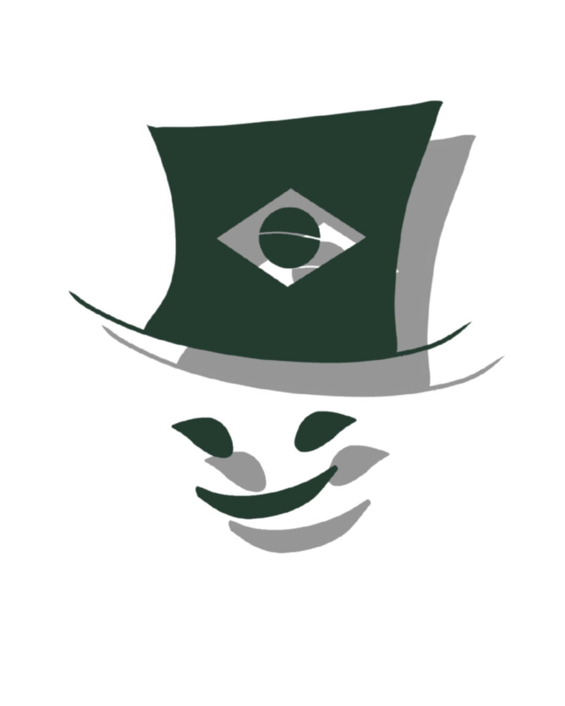

Sobre o Site:
Se você gosta do sobrenutural, acontecimentos REAIS sem explicações, você está no blog certo!
Aqui discutimos sobre os relatos de diversas pessoas pelo Brasil como se fosse um bate papo,
com ilustrações para deixar nossa conversa mais envovente! Nosso blog é dividio em duas sessões: Lendas e Paranormal.
Se você é uma pessoa mais tradional, que gosta de relatos reais (normalmente vindas de pessoas do meio rural) essa
é a sessão ideal para você! "Aí, mas eu prefiro relatos que simplesmente nenhuma história do folclore brasileiro
possa explicar!",
calma colega, temos uma sessão única para você também! Os relatos paranormais 👻. Aqui temos
histórias que até hoje não se sabe
explicar se foi ou não algo real; nunca saberamos...
Então, vamos juntos explorar esse universo místico inexplicavel!
‼️Para melhor experiência, recomendamos um ambiente com pouca luz, mas muito silêncio‼️
